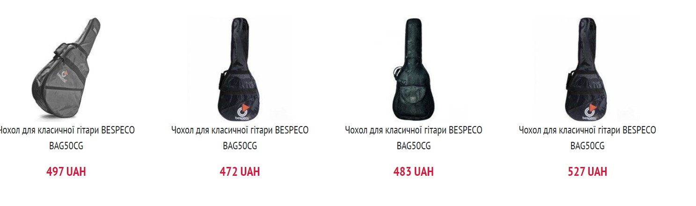

ПРЕДМЕТНЕ СЕРЕДОВИЩЕ
WEB-застосунок для онлайн-магазину гітар — це сучасна інформаційна система, створена для
автоматизації та
оптимізації процесу вибору, покупки та доставки музичних інструментів та аксесуарів. Основною метою
застосунку є забезпечення зручного, швидкого та безпечного способу оформлення замовлень, управління
асортиментом товарів і відстеження поставок.
Цей сервіс значно спрощує процес вибору гітар та аксесуарів, оформлення покупки та контролю за замовленнями.
Користувачі можуть реєструватися в системі та створювати персональні кабінети, де зберігається історія
покупок, список улюблених товарів та налаштування оплати. Вони мають змогу переглядати каталог продукції,
сортувати товари за брендом, ціною або категорією (електрогітари, акустичні гітари, бас-гітари, аксесуари),
а також додавати обрані позиції у кошик.
Оформлення замовлення здійснюється в кілька кліків із можливістю вибору способу оплати (онлайн або при
отриманні). Користувачі отримують сповіщення про статус замовлення, можуть змінювати адресу доставки та
залишати відгуки про куплені товари.
Адміністративна панель забезпечує управління всіма аспектами роботи сервісу. Адміністратори можуть
контролювати наявність товарів у каталозі, оновлювати ціни, додавати акційні пропозиції та відстежувати
виконання замовлень. Також система дозволяє керувати користувачами, аналізувати їх активність і відстежувати
статистику продажів.
Вбудований модуль аналітики допомагає оцінювати попит на різні типи гітар, прогнозувати популярні моделі та
оптимізувати процес постачання.
Особливу увагу приділено безпеці даних. Усі персональні дані користувачів та адміністрації зберігаються у
захищеній базі даних із використанням сучасних алгоритмів шифрування. Доступ до системи можливий лише після
автентифікації та авторизації, що забезпечує конфіденційність інформації.
Система підтримує можливість масштабування та оновлення функціоналу, що дозволяє додавати нові модулі, такі
як програма лояльності, персоналізовані рекомендації на основі попередніх покупок та інтеграція з музичними
сервісами для прослуховування демо-записів.
Завдяки використанню сучасних технологій WEB-застосунок підвищує ефективність процесу покупки, скорочує час
на оформлення замовлень і покращує загальний користувацький досвід.
БІЗНЕС - ЛОГІКА
Функціональні вимоги:
- Система реєстрації та авторизації користувачів
- Персональний кабінет користувача
- Список улюблених товарів.
- Каталог товарів
- Фільтри за брендом, ціною, типом гітари.
- Детальні сторінки товарів із фото, описом та відеооглядами.
- Кошик та оформлення замовлення
- Автоматичний розрахунок суми замовлення.
- Система оплати
- Онлайн-оплата
- Оплата при отриманні.
- Адміністративна панель
- Додавання, редагування та видалення товарів.
- Перегляд аналітики продажів.
- Динамічний пошук із підказками.
- Пошук за ключовими словами (наприклад, "Fender Stratocaster", "струни 10-46").
- Безпека
- Захист персональних даних та платежів.
- Масштабованість
- Підтримка великої кількості користувачів і товарів.
- Продуктивність
- Швидке завантаження сторінок і обробка замовлень.
- Адаптивний дизайн
- Оптимізація для мобільних пристроїв
- Зовнішні платіжні сервіси.
- Аналітика
Тема, мета, місце розташування WEB-застосунка та місце звітного HTML-документу
Тема: СТРУКТУРА HTML-ДОКУМЕНТА. ВИБІР ПРЕДМЕТНОЇ ГАЛУЗІ. GitHub. РОБОТА З РЕПОЗИТОРІЯМИ. ОСНОВНІ ТЕГИ ТА АТРИБУТИ в HTML-ДОКУМЕНТІ.
Мета: Придбати практичні навички роботи з GitHub, репозиторіями, HTML-документом, таблицями, зображеннями, посиланнями, списками, формами. Створити шаблон звітного HTML-документом для відображення результатів роботи всіх лабораторних робіт.
- Посилання на репозиторій власного WEB-застосунку
- Посилання на репозиторій на живу сторінку власного WEB-застосунку
- Посилання на репозиторій звітного HTML-документа
- Посилання на репозиторій на живу сторінку звітного HTML-документу
- Посилання на репозиторій з самостійними роботами
- Посилання на репозиторій живу сторінку з самостійними роботами
СТРУКТУРА ДОКУМЕНТА
Код списку
Зображення
Інформація
Тег <ul> (невпорядкований список) використовується для створення списку елементів, де порядок елементів не важливий. Кожен елемент списку визначається за допомогою тегу <li>. Цей тег часто застосовується, коли ви хочете створити список без нумерації. Тег <ol> (упорядкований список) створює список елементів з чіткою нумерацією або іншими маркерами (наприклад, літерами або римськими цифрами). Як і в <ul>, елементи списку визначаються тегом <li>. Приклад: <ul> <li>Пункт 1<li> <li>Пункт 2<li> <ul>
Код зображення
Зображення
Інформація
Тег <img> використовується для вставлення зображень на веб-сторінку. Атрибут src визначає джерело зображення (посилання на файл або URL), а атрибут alt надає альтернативний текст, що відображається, якщо зображення не може бути завантажене. Тег <img> є самозакриваючим і не потребує парного тегу. Для кращої доступності та SEO важливо додавати атрибут alt, що описує вміст зображення. Приклад: <img src="image.jpg" alt="Опис зображення">
Код таблиці
Зображення
Інформація
Тег <table> використовується для створення таблиць. Таблиця складається з декількох елементів:
<tr> — тег для рядка таблиці.
<td> — тег для клітинки таблиці.
<th> — тег для заголовка клітинки таблиці, зазвичай використовується для визначення заголовків
стовпців або рядків.
Таблиці є дуже корисними для представлення структурованих даних у вигляді рядків та стовпців.
Приклад:
<table> <tr> <th>Заголовок 1</th> <th>Заголовок 2</th> </tr> <tr>
<td>Дані 1</td> <td>Дані 2</td> </tr> </table>